If you only switch a few things to organic, start here. These are the 12 fruits and vegetables with the strongest Australian evidence of pesticide residues, ranked by how solid that evidence is. If you're feeding kids or you're pregnant, they're the ones that matter most.
Download & print ↓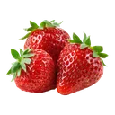
Strawberries Buy Organic 10% of all AU pesticide detections 2000–2011, second only to apples among fresh produce (Friends of the Earth Melbourne, 2012). In CHOICE's 2008 test of strawberries from 31 growers, one sample exceeded the Australian legal limit and two more exceeded stricter EU limits for captan. Unpublished government data, obtained under FOI by Guardian Australia, showed dimethoate at up to 90× the Australian MRL. Dimethoate: banned in the EU since 2019; possible human carcinogen (US EPA).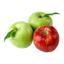
Apples Buy Organic Highest pesticide detection count in AU monitoring data 2000–2011 (Friends of the Earth Melbourne). The Food Standards Code sets apple residue limits for 136 chemicals. Post-harvest diphenylamine widely used (banned EU).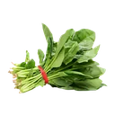
Spinach & leafy greens Buy Organic Large surface area absorbs systemic pesticides that cannot be washed off. Consistent highest-risk class globally and in AU monitoring data.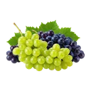
Grapes Buy Organic 6.4% of all AU pesticide detections 2000–2011. Multiple fungicides applied repeatedly. Thin skin — cannot be peeled.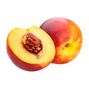
Stone fruit peaches, nectarines, apricots, plums, cherries (most stone fruit: limited AU data) Buy Organic Unpublished government testing (2013), revealed under FOI by Guardian Australia, found fenthion at unacceptable levels in nine peach samples and one apricot. Fenthion has since been withdrawn in Australia. PFAS fludioxonil found on 90% of peach & plum samples (EWG 2026).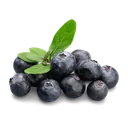
Blueberries Buy Organic Chlorpyrifos & thiometon detected in AU blueberries (FSANZ 2011). Southern Cross University (2025): 3 samples had dimethoate at levels that could exceed the safe daily intake if eaten daily. APVMA suspended dimethoate use on blueberries, raspberries and blackberries (November 2025).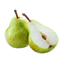
Pears Buy Organic 9.5% of all AU pesticide detections 2000–2011 — third among fresh produce, after apples and strawberries (Friends of the Earth Melbourne, 2012). High fungicide use. Diphenylamine post-harvest (banned EU).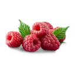
Raspberries & blackberries Buy Organic 91% of blackberry samples had detectable pesticides, avg 4+ per sample (EWG 2026). PFAS bifenthrin detected. Same APVMA dimethoate suspension covers raspberries & blackberries (2025).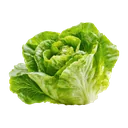
Lettuce Buy Organic 4.1% of all AU pesticide detections 2000–2011 (Friends of the Earth Melbourne, 2012). No outer skin — entire surface is eaten.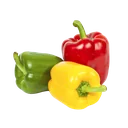
Capsicum / bell peppers Buy Organic Named in AU ATDS monitoring data. Thin edible skin. Ranks just below the Dirty Dozen globally on overall pesticide toxicity.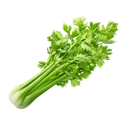
Celery Buy Organic Named in AU ATDS data. No outer peel — every stalk surface is exposed. Very high surface area-to-volume ratio. 64 different pesticides detected internationally.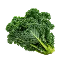
Kale & Asian greens Buy Organic High pest pressure, systemic pesticide use documented. Limited AU-specific testing but biology identical to highest-risk leafy class. Tops EWG 2026 on toxicity weighting.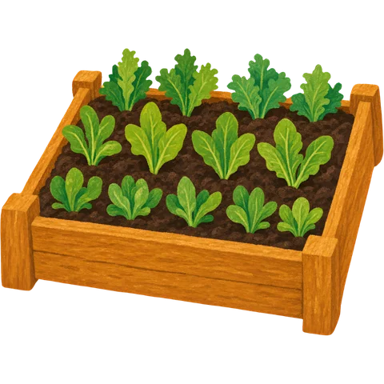
Grow your own greens. Spinach, lettuce, kale and silverbeet are among the easiest things to grow in a pot or a patch, and they're some of the hardest to clean of residues. A few pots of greens takes a big item off this list.
All three produce guides (the Dirty Dozen AU, Tread Carefully and Fill Your Basket) in one printable PDF. If you value this information and can afford a contribution of any amount, I’d really appreciate it. In the spirit of Creative Commons, all downloadable guides will remain free.
Contributions are handled securely by Stripe in a new tab. Your download starts either way.
An occasional email when new Australian data changes a guide or a new guide launches. A few times a year, no spam, unsubscribe any time.